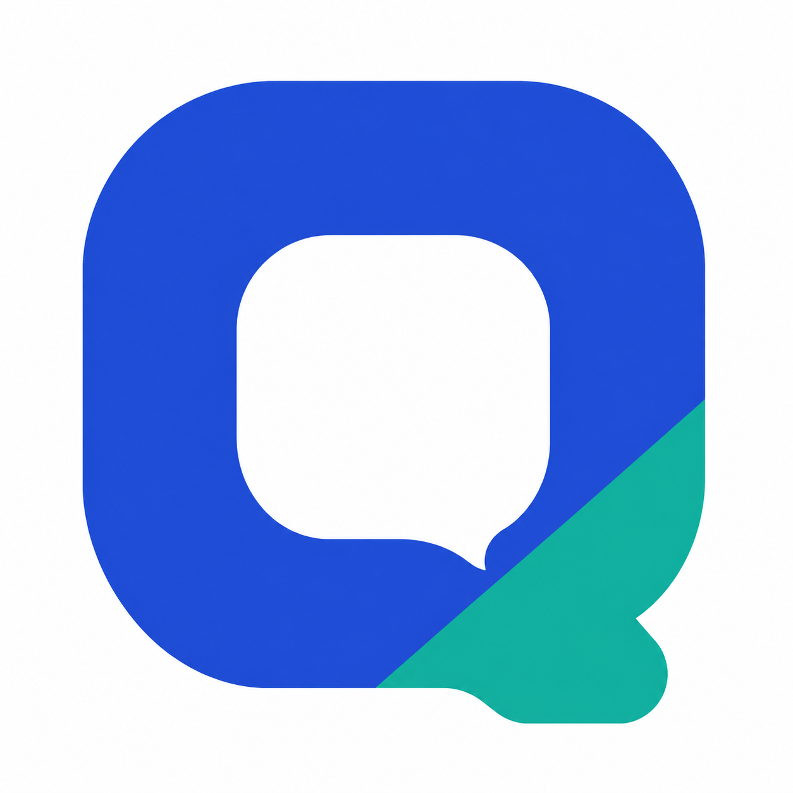
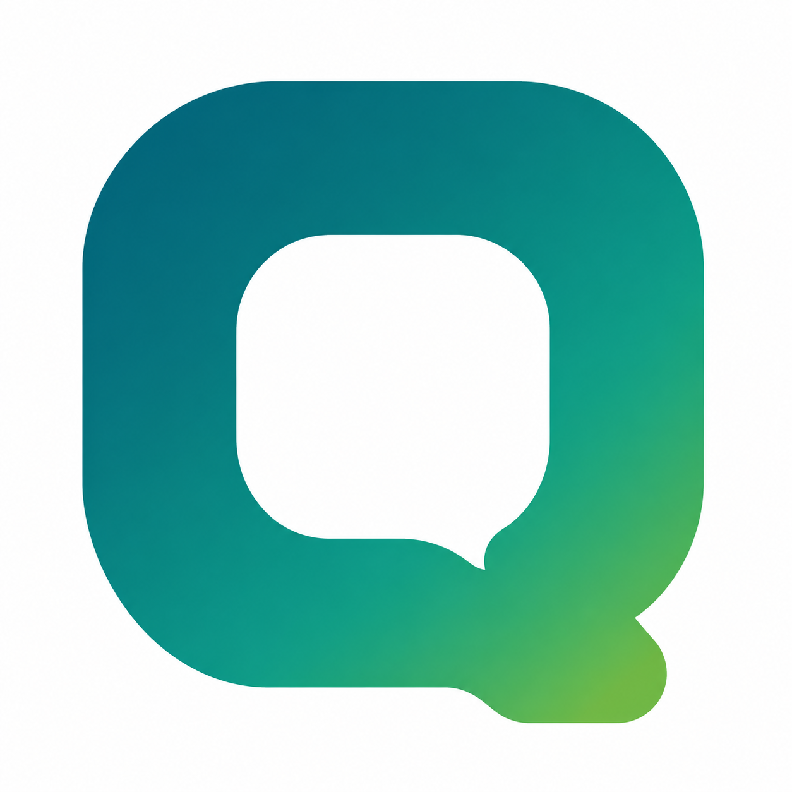

CLOUDQ GATEWAY / COLOR STUDY 03
给 Q 的出口，一点色彩。
沿用已选 A 方案。下方图标按 16 / 24 / 32 / 48 CSS 像素显示，请以浏览器 100% 比例查看。

CloudQ Gateway
明亮蓝色 × 青绿出口
清爽、利落，与现有蓝色界面容易衔接。
下载此版原图 ↗CloudQ Gateway
沉稳深蓝 × 珊瑚橙出口
冷暖对比更鲜明，给技术工具一点温度。
下载此版原图 ↗
CloudQ Gateway
深青 → 翡翠绿 → 叶绿
色彩连续流动，整体更柔和、更有活力。
下载此版原图 ↗